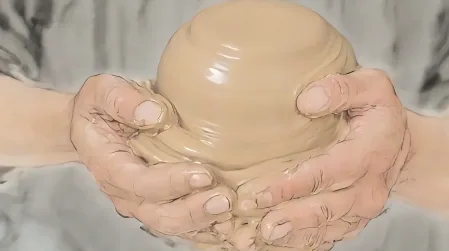
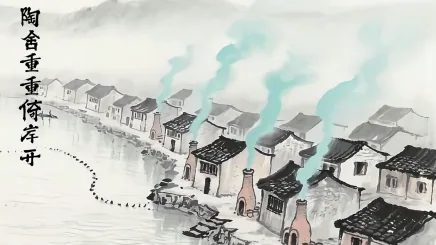
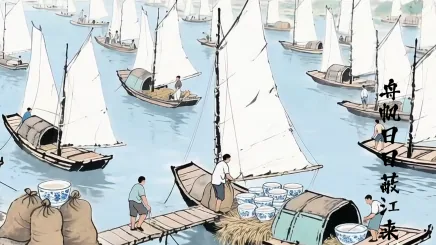
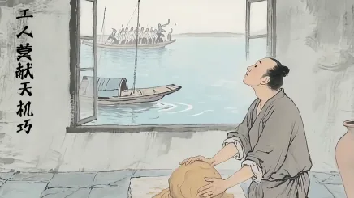

瓷脉・通达天下
以瓷为脉 · 连起千里江山的烟火与底气
瓷脉・通达天下
《瓷脉・通达天下》是一部“古意纪实”风格的公益广告动画。作品以诗句为骨，用“陶舍 — 江舟 — 匠人 — 天下”的脉络，跟随晨雾中的窑火出发，看舟帆蔽江、匠人揉泥拉坯，直至白帆如瓷龙蜿蜒远去。不刻意强调技艺之“巧”，而突出“拙”中的坚韧——让泥土成为“郡国之材”的根基，传递“文化源于生活，惠及天下”的公益理念。

以瓷为脉，依江右诗篇为线，在窑火与江声之间，遇见陶瓷从工坊到天下的旅程。——平凡中见伟大，也看见人与泥土、传统与当下的温柔连接。

陶舍重重倚岸开窑火连江
舟帆日日蔽江来江路舟瓷
工人莫献天机巧匠心藏巧以瓷为脉 · 连起千里江山的烟火与底气
陶舍重重倚岸开，舟帆日日蔽江来。
工人莫献天机巧，此器能输郡国材。